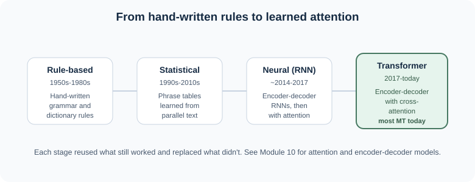
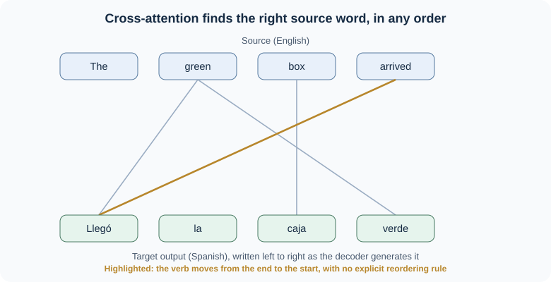

12.2 Machine Translation#
Google Translate alone moves hundreds of billions of words a day between over 100 languages [JM26f]. This reading asks:
What makes translating between languages hard, and how does a transformer do it?
By the end of these notes you should be able to:
explain what machine translation does and name several sources of difficulty between languages
place rule-based, statistical, neural, and transformer-based translation in historical order, and explain why the field moved between them
describe, conceptually, how an encoder-decoder transformer translates a sentence
explain how translation quality is evaluated, including what BLEU measures and what it misses
identify translation errors involving ambiguity, context, and named entities, and connect them to the entity ideas from 12.1
We pick up the Amazon example from 12.1: the same word that is an easy ORG tag in English is a genuine translation problem, because the company name and the river name do not behave the same way across languages.
1. Why Translation Is Hard#
Note
Connecting the dots. You know: words carry meaning and structure within a sentence (Module 1 onward). New problem: languages do not all build sentences out of the same pieces in the same order. Next: the main sources of divergence between languages, which any translation system has to handle.
Machine translation (MT) is the task of automatically converting text from a source language into a target language while preserving meaning and producing fluent output. Several kinds of cross-language difference make this hard [JM26f]:
Word order. English is a subject-verb-object (SVO) language; Japanese is subject-object-verb (SOV). The English sentence He wrote a letter to a friend becomes, word for word, friend to letter wrote in Japanese, with the verb moved to the end and the pronoun dropped entirely. German and Mandarin have their own reordering quirks (an adverb that starts a German sentence pushes the verb into second position; a goal phrase that follows the verb in English often comes before it in Mandarin). A translator has to restructure the sentence, not just swap words one for one.
Word sense. The English word bass can mean a fish (Spanish lubina) or a musical instrument (Spanish bajo); the right translation depends on context. The same problem touches most common words and connects directly to word-sense disambiguation from earlier in the course.
Referential density (pro-drop). Some languages require an explicit pronoun almost everywhere English would use one; others allow it to be dropped and recovered from context. Spanish can drop a subject pronoun once it is established (dio con un libro… mostró su hallazgo, “[he] came upon a book… [he] showed his find”); Japanese and Chinese drop pronouns even more freely. Linguists call languages that omit more “cold” and languages that spell more out “hot,” borrowing the terms from media theory [JM26f]. Translating from a cold language into a hot one means the system has to infer a pronoun, and the right gender or number, from context that may be several sentences away.
Grammatical gender. Translating I saw the movie and it is good into German or French requires choosing a gendered pronoun for it, because film (French) and Film (German) carry grammatical gender that English nouns do not. There is no “neutral” option in the target language; the system has to commit to one. We return to this exact ambiguity in Section 5, because it is also where translation bias tends to appear.
Idioms and lexical gaps. Spill the beans translated word for word into most languages is nonsense; it needs an idiomatic equivalent, or a literal explanation if none exists. Sometimes no equivalent phrase exists at all: English has no single word for the Mandarin xiào or Japanese oyakōkō, both translated awkwardly as “filial piety” [JM26f].
None of these problems were invented by machine translation. They are exactly why professional human translators exist, and why, as you will see in Section 4, meaning preservation rather than word-for-word matching is what quality evaluation has to measure.
2. Four Approaches, in Order#
Note
Connecting the dots. You know: the kinds of divergence above. New problem: how should a system handle them? Next: four answers, each one replacing the limits of the one before it.


Fig. 38 Each stage replaced a limitation of the one before it.#
Rule-based MT (1950s to 1980s) used hand-written grammar and dictionary rules, written by linguists, to segment, translate, and reorder phrases. It required enormous linguistic expertise to build and could not scale to the exceptions every language has.
Statistical MT (1990s to 2010s) replaced hand-written rules with probabilities learned from large collections of parallel text (the same sentence in two languages). For example, a phrase table might learn that the German word Sicherheit corresponds to English security far more often than safety, and safety far more often than certainty:
German phrase |
English translation |
Learned count |
|---|---|---|
Sicherheit |
security |
14,516 |
Sicherheit |
safety |
10,015 |
Sicherheit |
certainty |
334 |
Statistical MT was a real improvement, but it still struggled with context beyond a short phrase window, and reordering still relied on separate, fairly rigid models.
Neural MT (around 2014 to 2017) replaced phrase tables with an encoder-decoder network: an encoder reads the whole source sentence into a representation, and a decoder generates the target sentence word by word. Early versions used recurrent networks (RNNs); adding attention let the decoder look back at the most relevant source words at each step, rather than compressing the entire sentence into one fixed-size vector, the same bottleneck problem Module 10 described for plain RNNs.
Transformer-based MT (2017 to today) replaced the RNN encoder and decoder with the transformer architecture from Module 10, and is the standard approach used by essentially every major translation system today [JM26f]. Section 3 looks at how.
3. How a Transformer Translates#
Note
Connecting the dots. You know: the encoder-decoder family from Module 10, where an encoder reads the input and a decoder writes a new sequence. New problem: the decoder needs to know which source words matter for the word it is writing right now. Next: cross-attention, the one new piece.
An encoder-decoder transformer for translation works the way Module 10 described: an encoder reads the source sentence and produces a contextual vector for each source word; a decoder generates the target sentence one token at a time. The one addition specific to this architecture is cross-attention: at each step, the decoder attends not only to the target words it has already written, but to every vector the encoder produced for the source sentence, and decides which ones matter most for the word it is about to write [JM26f].
This is what lets the model handle word-order divergence without a hand-written reordering rule. Translating The green box arrived into Spanish, the decoder writes Llegó (“arrived”) first, even though arrived is the last word of the English sentence, because cross-attention lets it look at any source word in any order, not just left to right.


Fig. 39 Cross-attention lets the decoder pull from any source word, in any order.#
Training data: parallel corpora
Translation models are trained on parallel corpora (bitext): large collections of the same text in two languages, aligned sentence by sentence. Sources include government proceedings (the Europarl corpus, from European Parliament records), United Nations documents, and movie subtitles [JM26f]. Text is split into subword pieces, not whole words, using the same kind of tokenizer from Module 2, so that rare names and unseen words can still be represented.
4. Evaluating Translation Quality#
Note
Connecting the dots. You know: precision, recall, and F1 from Module 5, and that meaning, not word-for-word matching, is the goal (Section 1). New problem: “good translation” is not a single number. Next: how humans judge it, and the automatic shortcut used when human judgment is too slow or expensive.
Translations are judged on two dimensions [JM26f]:
Adequacy (or faithfulness): how much of the source sentence’s meaning survives in the translation.
Fluency: how natural and grammatical the output reads in the target language.
A translation can be fluent but inadequate (confident, readable, and wrong) or adequate but disfluent (correct content, awkward phrasing). Human evaluation, where raters score adequacy and fluency on a scale, or rank competing translations against each other, is the most reliable way to measure both, but it is slow and expensive to run every time a system changes.
BLEU (Bilingual Evaluation Understudy) is the best-known automatic shortcut [PRWZ02]. It compares a candidate translation against one or more human reference translations by counting how many overlapping word sequences (1-word, 2-word, 3-word, and 4-word spans) the candidate shares with the reference, combined with a penalty for candidates that are suspiciously short. A higher BLEU score means more overlap with the reference wording.
Important
BLEU measures word overlap with a reference translation, not meaning. A fluent, accurate paraphrase that uses different words than the reference can score poorly, while a translation that copies reference wording while garbling meaning can score well. BLEU is also sensitive to exactly how the text was tokenized, which makes raw BLEU scores hard to compare across systems unless both use the same tokenization standard.
Because of these limits, current evaluation research increasingly favors metrics such as chrF, which compares overlapping character sequences instead of whole words and handles languages with rich morphology more gracefully, and embedding-based metrics that can recognize a correct paraphrase even when the wording differs completely from the reference [JM26f]. You are likely to encounter BLEU scores reported in papers and product documentation for years to come, so it is worth knowing what it does and does not capture, even as the field moves toward metrics that handle meaning better.
5. Names, Idioms, and Low-Resource Languages#
Note
Connecting the dots. You know: NER finds and types spans like Amazon (12.1, Section 2). New problem: translation has to decide what to do with that span. Next: why the right answer depends on what kind of entity it is, and what happens when training data for a language is scarce.
Not every word should be translated the same way. A proper name usually should not be translated at all: a person’s name generally stays the same across languages. A place name may have a different conventional form in each language even though it refers to the same place (Munich in English, München in German). And some words are genuinely ambiguous between a name and an ordinary word, which is exactly the Amazon problem from 12.1: Amazon the company name should stay Amazon in almost any target language, because it is a brand, but Amazon the river has its own conventional form in many languages (Amazonas in Spanish and Portuguese). A translation system that cannot tell these apart risks either translating a brand name that should have stayed fixed, or leaving a geographic name in a form target-language readers do not recognize.
This is also where NER and MT connect downstream. If a translated document is later run through an NER pipeline, an entity mangled in translation, a name split apart, mistranslated, or left in the wrong conventional form, becomes an entity the NER tagger either misses or mislabels. A translation error can quietly become an information-extraction error.
Low-resource languages compound all of this. Most of the world’s languages have far less parallel training text than English, Spanish, French, or Mandarin, so a general-purpose MT system tends to be noticeably weaker exactly where users may have the fewest alternatives. Current systems address this partly with multilingual models, the same idea from 12.1: one model trained across many languages can share what it learns about a higher-resource language with a related lower-resource one. Meta’s NLLB-200 (“No Language Left Behind”) is an open research system built specifically to improve translation for roughly 200 languages, many of them low-resource [NLLBTeamCjussaC+22], alongside widely used commercial services such as Google Translate and DeepL (named here as of November 2026; like the model landscape in Module 11, specific products change quickly).
6. Bias in Translation#
Note
Connecting the dots. You know: grammatical gender forces a translation choice that English does not (Section 1). New problem: when a system has to guess, what does it guess, and is the guess fair? Next: a documented pattern, and why it is not just “the model made one mistake.”
Many languages, including Hungarian, have a single gender-neutral pronoun. Translating from Hungarian into English forces a choice between he and she, since English pronouns are obligatory and gendered. Research auditing commercial translation systems found a consistent pattern: translating ő egy ápoló (“[gender-neutral] is a nurse”) produced she is a nurse, while ő egy vezérigazgató (“[gender-neutral] is a CEO”) produced he is a CEO [PAL19]. The same study found that this pattern was not simply mirroring real-world labor statistics: the systems’ gender associations were more stereotyped than the actual gender balance of those occupations, meaning the bias was amplified, not just reproduced. A separate benchmark, WinoMT, confirmed that translation quality drops specifically on sentences describing people in non-stereotypical roles (for example, a male nurse or a female doctor), compared to sentences that match the stereotype [SSZ19].
This is the same it → er ambiguity from Section 1, just with social consequences attached: when a language forces a choice English does not, a model trained on real-world text tends to default to the stereotype, and does so more confidently than the underlying data would justify.
7. Key Takeaways and Knowledge Check#
MT has to handle word order, word sense, pro-drop, grammatical gender, and idioms, among other systematic differences between languages.
Four approaches, in order: rule-based (hand-written rules) → statistical (learned phrase probabilities) → neural (RNN encoder-decoder, then with attention) → transformer (encoder-decoder with cross-attention), the current standard.
Cross-attention lets the decoder draw on any source word in any order, which is how transformer MT handles reordering without hand-written rules.
Translation quality has two dimensions, adequacy and fluency. Human evaluation is the most reliable judge; BLEU is a common automatic shortcut that measures word overlap with a reference, not meaning, and newer metrics such as chrF are increasingly preferred.
Names need different treatment than ordinary words: keep a brand name fixed, convert a place name to its conventional form, and watch for words ambiguous between the two. Low-resource languages get systematically weaker translation, which multilingual models partly address.
Forced grammatical choices, such as gender, can surface and amplify real-world stereotypes; this is a documented, measurable pattern, not an occasional glitch.
Check your interpretation#
Translate (by hand or with a translation tool of your choice) the sentence I saw the movie and it is good into a language with grammatical gender (French, German, and Spanish all work). What did the tool choose for it, and why might that be a hard decision for any translator, human or machine, to get right from this sentence alone?
A company deploys one multilingual MT model for all its supported languages instead of one model per language. What does it gain, and what risk does Section 5 suggest it should watch for?
Two candidate translations of the same sentence have very different wording from the reference translation but both preserve its meaning well. What would you expect to happen to their BLEU scores, and why might a human rating disagree?
A news article mentions “Amazon” six times: once about the company’s earnings, once about Amazon rainforest deforestation. What would a translation system need to get right for an NER pipeline to correctly tag both mentions after translation?
Suggested interpretation
The tool has to commit to a gendered pronoun for it, referring back to movie (film/Film/película), even though English gives no signal beyond grammatical gender in the target language itself. There is no way to tell from this one sentence whether the translator “understood” anything about the movie; it is purely a grammatical requirement of the target language, which is exactly why Section 6’s bias research can isolate this case so cleanly: the input gives the system no real information to work with, so whatever pattern appears in its choice comes from what it learned, not from the sentence.
It gains shared benefit across languages (a related higher-resource language can help a lower-resource one, as in 12.1’s zero-shot transfer) and lower maintenance cost than many separate models. The risk from Section 5 is uneven quality: the shared model may perform noticeably worse on its lower-resource languages, which is easy to miss if only an overall, averaged quality number is reported.
Both candidates would likely score lower on BLEU than a translation that happens to reuse the reference’s exact wording, because BLEU counts word-sequence overlap, not meaning. A human rater, judging adequacy and fluency directly, could rate both candidates highly despite the low BLEU score, which is exactly the gap Section 4 describes between automatic and human evaluation.
The system needs to recognize that “Amazon” the company is a brand name that should stay fixed in the target language, while “Amazon” referring to the rainforest or river should take the target language’s conventional geographic form if one exists. Getting this wrong, for example leaving both as the untranslated English form, or translating the company name as if it were the place, would cause a downstream NER tagger to either mislabel the entity type or fail to recognize it as the same real-world entity readers expect.
Next, the coding practice puts both readings to work on exactly this problem: you will tag named entities with a pretrained multilingual model, translate sentences with a pretrained English-to-German model, and check whether an entity’s type or boundaries survive the trip across languages.

References#
Main source for translation divergence, typology, pro-drop, encoder-decoder MT, cross-attention, low-resource and multilingual models, and evaluation: [JM26f] (Chapter 13, “Machine Translation”). BLEU: [PRWZ02]. chrF: [Popovic15]. Gender bias and stereotype amplification in MT: [PAL19]. WinoMT gender-bias benchmark: [SSZ19]. NLLB-200: [NLLBTeamCjussaC+22]. Multilingual transformers and zero-shot transfer, shared with 12.1: [TvWW22], [CKG+20].
The statistical phrase-table example (Section 2) and the German/French pronoun-gender example (Section 1) are adapted from the course’s earlier lecture notes, credited there to Stephen Clark’s Machine Translation lecture slides (University of Cambridge). The attention-alignment example (Section 3) adapts the sentence structure (an adjective-noun subject, a verb that moves to the front in Spanish) from the worked example in [JM26f], with a neutral noun in place of the original. The figures in this reading are original drawings for this course.